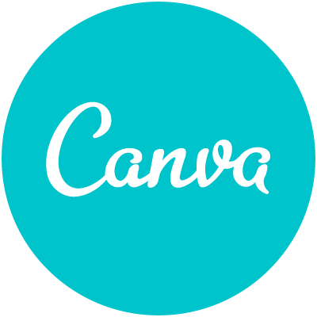
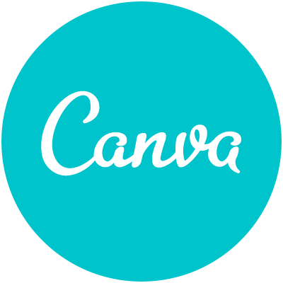

Expériencesprofessionelles
2021-2022
Assistant RH (stage) à BRASSIVOIRE
- Gestion Administrative du personnel
- Collecte de données Paie
- Gestion, suivi et mise à jour des dossiers du personnel
- Gestion d'une équipe de travail
- Gestion des données Cantine
Jan 2021 - Novembre 2021
Assistant RH (Stage) à Entreprise 2J Services (E2JS)
- Gestion Administrative du personnel
- Collecte de données Paie
- Gestion, suivi et mise à jour des dossiers du personnel
- Gestion d'une équipe de travail
Oct 2019 - Dec 2019
Assistant RH (Stage) à SAPH Rapides-Grah/San-Pedro
- Assister le Responsable RH dans la Gestion Administrative du personnel
- Collecter des données sur tout le personnel, servant de base de données
- Collecter les données et faire l'inventaire de la Cantine Rapides Grah
Études & formations
2017
BTS, Groupe Cefiat Abidjan/Plateau
2014 2015
bacalaureat, Lycée Moderne Arsene Assouan Usher , Grand Lahou
Autres expériences
Sécretaire général de la JECIV Grands Ponts
Certificat de formation, SSIAP1
2019 2021
Président des jeunes: Eglise UESSO Grand Lahou
Participer à plusieurs conference sur des sujets qui touchent le digital, RH & Entrepreneuriat
OUTILS INFORMATIQUES
 
